This project is under NDA. Enter the password to view.
Designing a premium electric pickup truck from the ground up — combining deep field research with ranchers and business owners, multi-platform HMI design, and an ongoing product development process targeting Level 3+ autonomous driving.
EdisonFuture set out to build a premium electric pickup truck — the EF1-T for consumers and EF1-V for commercial fleets — that could compete with the Ford Lightning, Rivian R1T, and Cybertruck while carving out a distinct identity: high-end, futuristic, and purpose-built for real work.
My role was to lead product design across the full process — from on-site field research with ranchers to HMI design for the in-vehicle interface — while coordinating with the engineering and industrial design teams to align form with function. The project is under NDA and ongoing.
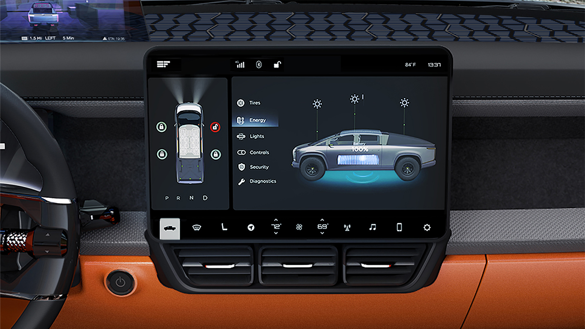
EdisonFuture EF1 — the electric pickup platform serving both consumer (EF1-T) and commercial/government (EF1-V) segments.
Research went well beyond surveys. The team attended major trade shows — LA Auto Show, CES, Intersolar, and ACT Expo — to gather direct feedback from target buyers. We also conducted field studies with working ranchers to observe real truck usage patterns that desk research could never surface.
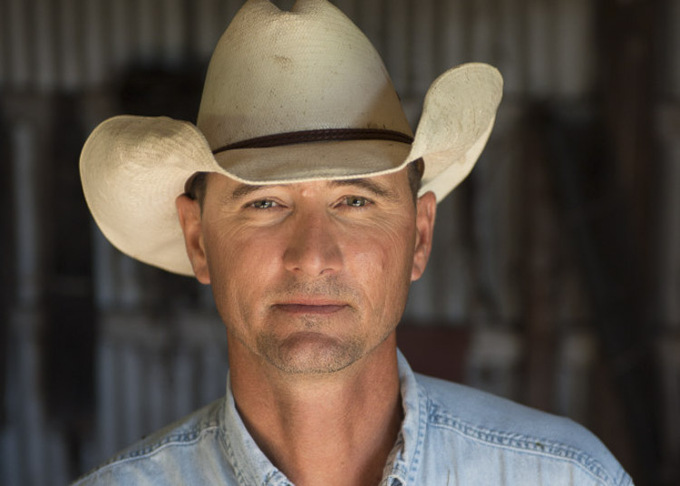
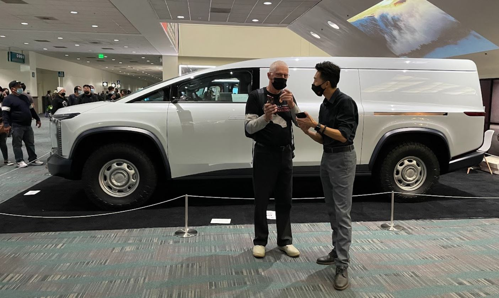
Field Study — Trailer Hookup Process
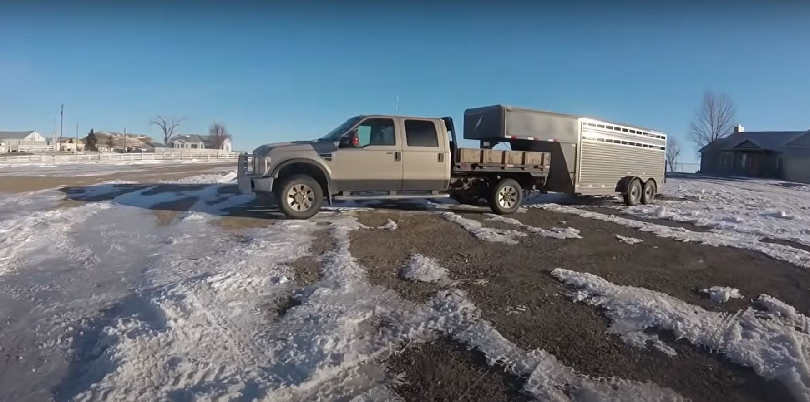
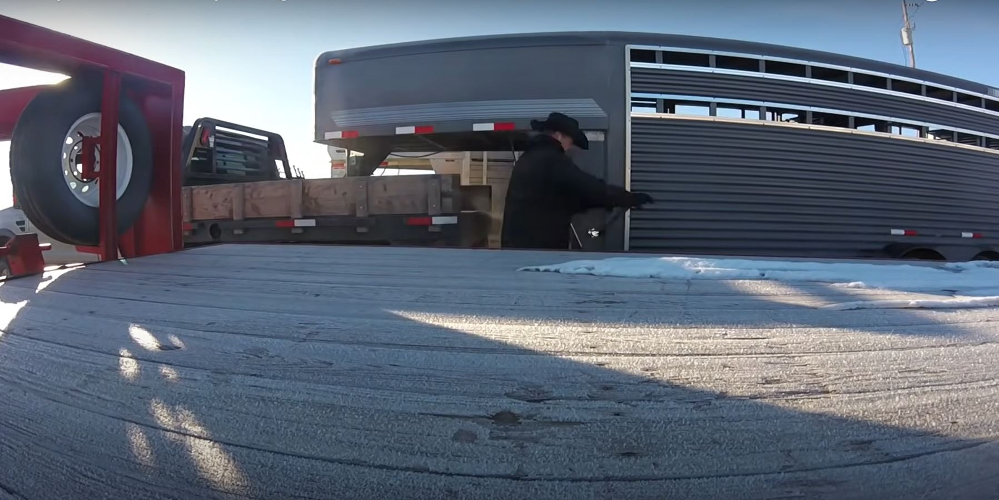
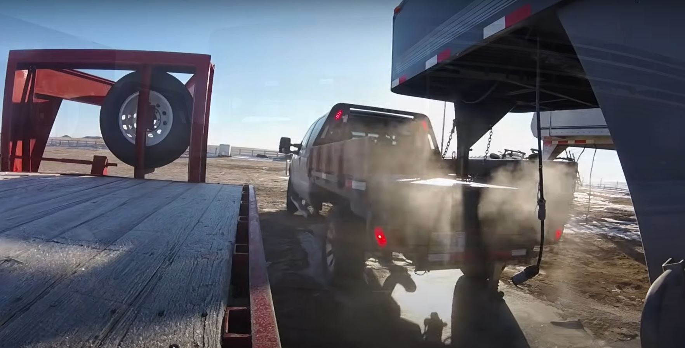
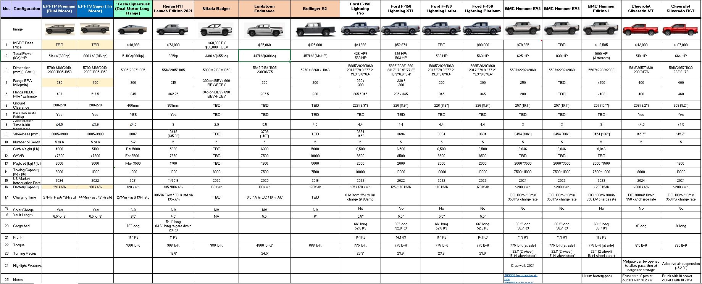
With research complete, the core design challenge crystallised around three tensions that existing EV trucks hadn't fully resolved: safety on the road, genuine utility at the worksite, and the psychological barrier of range anxiety. These were not separate problems — they were connected facets of the same trust gap between EV trucks and their intended buyers.
"How might we design an EV that can bring safety, convenience and lower the mileage anxiety?"
— Core HMW statement driving the EdisonFuture designThe research also surfaced a revised target group: not the average rancher (median salary ~$53k, too low for the $100k–$150k price point), but ranch managers and business owners in the top income tier — professionals who view a truck as both a tool and a statement of identity.
EF1-T — Consumer
Business owner, 35–45, $150k+ income
EF1-V — Commercial & Government
Fleet operators, agencies, enterprises
Ideation began with a "sensual tech" design direction — a philosophy of blending the raw utility of a working truck with futuristic, emotionally evocative aesthetics. Early sketches explored the EF1 platform across multiple body configurations before narrowing to the pickup truck (EF1-T) and cargo van (EF1-V) as the two production variants.
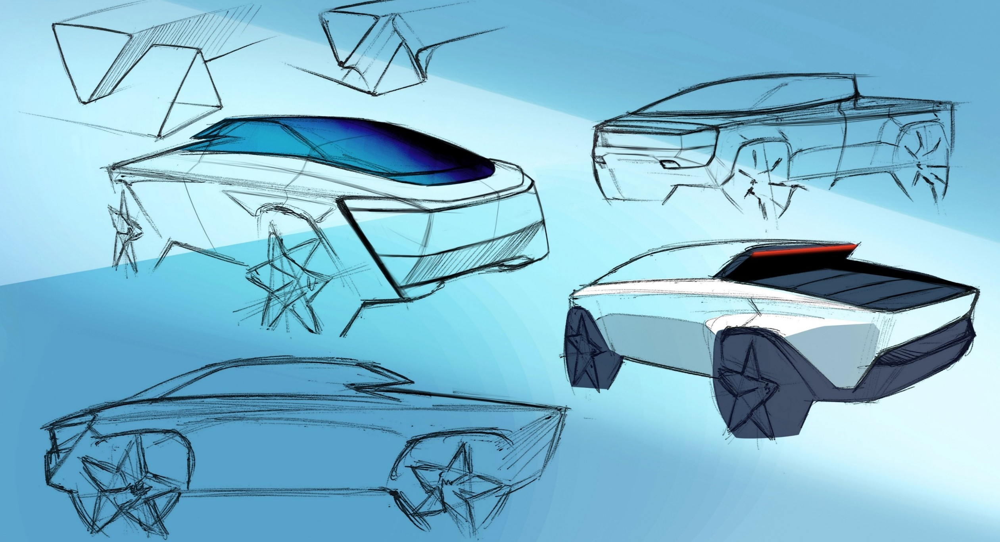
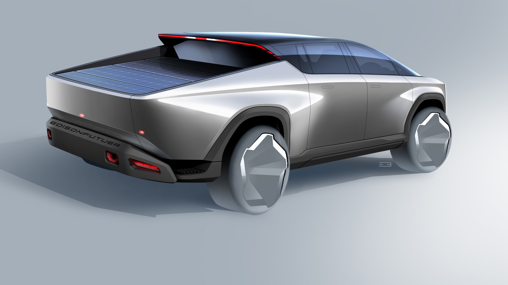
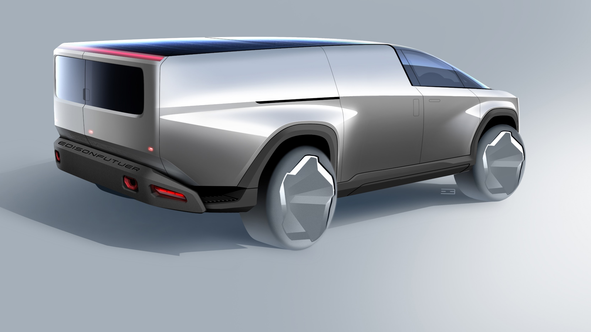
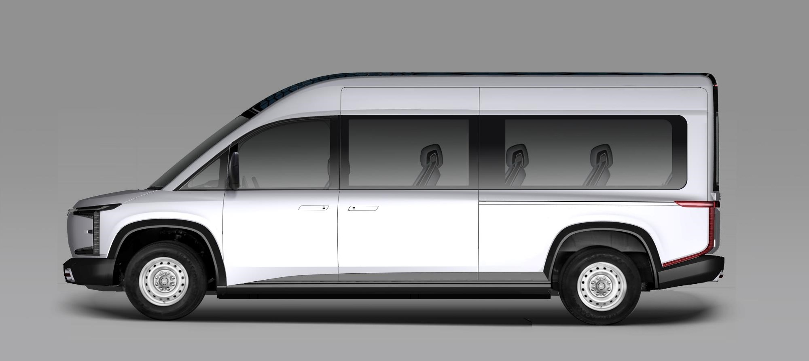
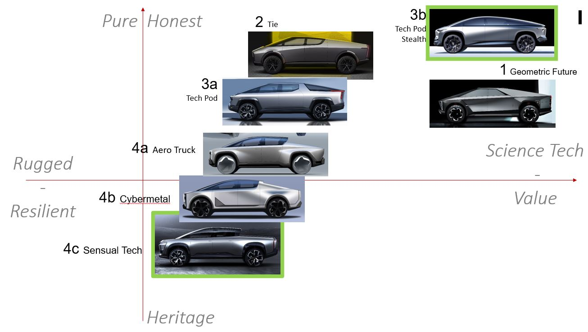
The in-vehicle HMI was designed to support both Android and iOS ecosystems — recognizing that fleet operators often standardize on one platform while consumer buyers have mixed preferences. The interface prioritizes driving-critical information at a glance, with deeper controls accessible without leaving the main view.
Vehicle renders show the EF1 in its production-intent state — a design that reads as premium and futuristic while remaining unmistakably a working truck. The light signature, proportions, and surface language were developed in close coordination with the industrial design team.
HMI Concepts — Android & iOS
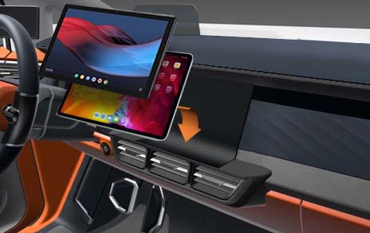
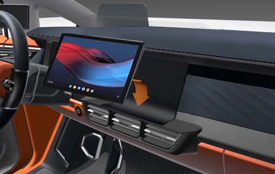
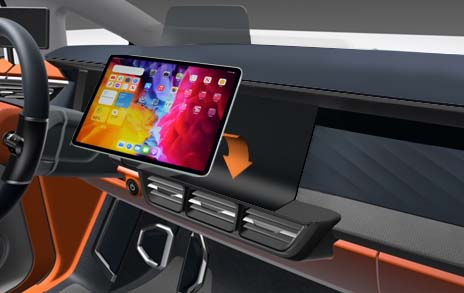
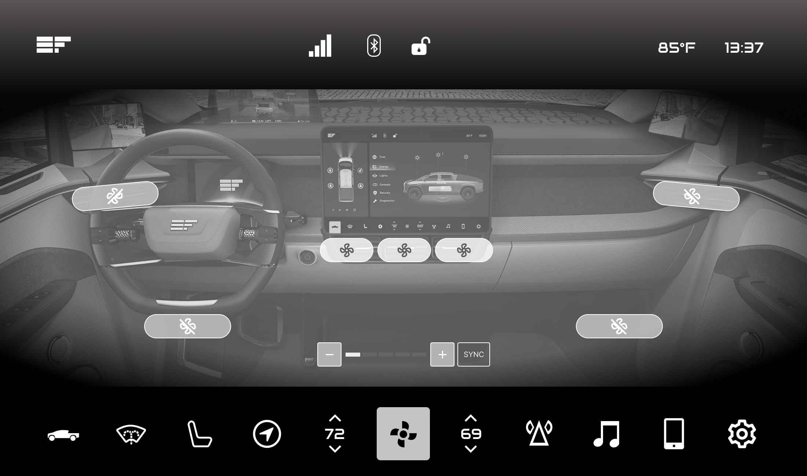
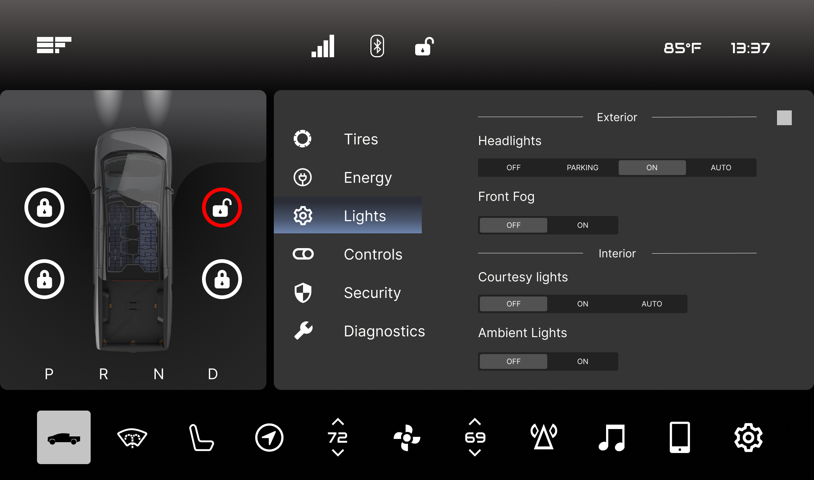
This project is ongoing. Guerrilla testing at trade shows has validated the design direction with real buyers, and the vehicle is progressing toward production with a target of Level 3+ autonomous driving capability by 2025. Business milestones — pre-order launch, tradeshow unveil, investor outreach — are running in parallel with the design process.
vehicle platforms — EF1-T (consumer pickup) and EF1-V (commercial van)
autonomous driving target — level 3 and above capability in the product roadmap
major trade shows attended for user research — LA Auto Show, CES, Intersolar, ACT Expo
Designing a physical vehicle is fundamentally different from designing software — the feedback loop is longer, the constraints are harder (regulatory, manufacturing, physics), and the gap between a compelling concept and a shippable product is wider. This project has sharpened my ability to make design decisions under genuine uncertainty rather than controlled conditions.
The field research with ranchers was the most grounding part of the process. Watching someone unhook a 17,500 lb horse trailer alone in a muddy field tells you more about what a truck needs to do than any focus group. Those observations directly shaped the product priorities — from hitch automation to cab-to-bed accessibility — in ways that secondary research never would have.
The HMI work taught me that automotive interfaces have a different risk profile than app UX. Cognitive load behind the wheel isn't an inconvenience — it's a safety issue. Every interaction had to earn its place by being worth the attention it costs the driver.